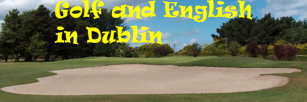

Courses
We offer programmes to cater to all needs and abilities,from part time adult to our celebrated Junior Summer Programme.
Click the following links for information on your desired Programme
You may also want to check out the testomomials of former students
Information about our specialised golf programmes can be found on the facebook page

Junior Summer Course 2017
Inidivual programmes designed on request
The Location
Rush is a quiet seaside town about 15 minutes from Dublin
airport, and 30 minutes by train from the capital city. It is as safe a location as
any in Ireland, and boasts two lovely beaches and a friendly and helpful people.
The Course
Junior Programmes are designed for teenagers (age 12-17) and
normally last 2 weeks. The maximum number of course participants is 8,
ensuring personal, individual attention to each student throughout their course.
The Classes and Teachers
The aim of the Junior Programme is to encourage
young learners to develop their English language skills and in particular their
oral and aural fluency in a safe secure environment. The classes are delivered by
highly qualified and experienced teachers, using age and level appropriate,
motivating materials and methodologies. All materials are provided. Classes run
Monday-Friday 9.30-1pm with a short break (15 hours tuition per week)
Students are tested pre-arrival, along with a needs assessment to ensure that
levels are evaluated and class materials are designed to meet the learners’ needs.
All students receive an end-of-course report and certificate.
The Programme of Activities
The Programme of Activities: Students are expected to participate fully in the
organised programme of adventure sports/general sports and cultural
excursions. Our programme is unlike others because our expert Outdoor
Pursuits Team conducts an exciting programme of activities through English
ranging from kayaking and canoeing, to rock climbing and hill walking. English
language learning does not stop when formal class ends! There are sporting and
cultural activities every afternoon, 3 evenings per week and also every Saturday.
The Host Families
Our host families live in houses with gardens and all within
a few minutes walking distance of each other and are personally known to us.
We match each student carefully with the host family, aiming to place the
student with a family with a teenager of a similar age and a family with similar
interests. All meals are provided, with breakfast and dinner being eaten with the
Irish family and a pack lunch/picnic or lunchtime barbecue on school days. The
families are extremely friendly and welcoming and enjoy helping their guests
with homework and entertaining them in the evenings and all day Sunday.
To ‘experience’ the Junior Programme from 2016, why not check out Facebook page for Juniors here - Facebook Page
Part-Time Courses for Adults
Preparation for the Cambridge English Exams
If you're already living and working in the area, why not up-skill your English?
What better way to show future employers your level of English and your commitment to improving than by taking a Cambridge exam?
We specialise in the Upper Suite Cambridge Exams:
FCE - First Certificate in English
CAE - Certificate of Advanced English
IELTS - International English Language Testing System
CPE - Certificate of Proficiency in English
Classes : 2 mornings or 2 evenings a week(4 hours per week) - 2 hours per class
Small groups, personal attention
Fees: €120 for 4 weeks
Exam course book required, costing in the region of €40...(you can organise this yourself or we will be happy to help you)
Please note that students are responsible for their own registration for the exam(although we are happy to provide help and support!)
Exam fees are payable directly to the exam centre, and exams are offered there more or less every month; registration is normally at least 6 weeks in advance.
For more information, check out our FaceBook page for part-time adult classes :
Facebook Page
FOR BOOKING OR ADDITIONAL INFO - e-mail : info@englishclassdublin.com
Adult living and Learning Programme
'Living' the language experience means learning English 24-7!
You can design the number of class hours and the balance with other activities that suits you and your needs...
Your teacher is highly qualified and experienced in all levels of teaching English to adults, juniors,
teachers of English (both native and non-native speakers), and English for Exams such as FCE and CAE.
You will do a level test before you arrive, and fill
out a needs analysis so that your teacher can plan the lessons to suit your level and your requirements.
Focus on Speaking, or Writing, Grammar or Vocabulary... improve your Writing and Listening, develop your use of idioms
and enjoy phrasal verbs! Prepare for exams or delivering reports and conducting meetings. It's about what you need!
The standard class programme is 15 hours per week of private tuition for juniors, 20 hours for adults and
then informal learning, activities and study time over the rest of the day. You can increase the number of private tuition hours
at a rate of €50 per hour if you want to have a greater focus on the lessons.
All lesson materials* will be provided, along with an end of course report with recommendations for further improvement.
*Please feel free to bring along any materials you would like to focus on
Junior Course Feedback
-
When I arrived in Ireland I understood I would have loved this country. In fact it is very green and rick in plants, a very new and strange thing for me. I enjoyed sausages, potatoes and chicken, speaking about food. And after eating I liked activities and sports ,in particular kayak in the sea and in the lakes.
Organization was practicaly perfect, and the families were all kind and nice. I felt satisfied with managing to speak English and express what I wanted.
I really hope I will return to Ireland next year and have fun as I had this time. ( age 15)
-
This has been my first visit to Ireland, and I have to say I enjoyed it very much.
My family has been really kind with me, even if at the beginning I was a bit worried about this. We did a lot of new things, like kayaking and rock climbing, things that I enjoyed very much also because I had never done them before.
I also liked visiting a new country and discovering a new culture.
I hope that I will have another opportunity to come back to Ireland. (age 13)
-
When I arrived here I was really happy but also a little bit afraid. When I knew my family I thought in my mind “wow they are really kind”
I enjoyed every moment of this holiday, my favourite experience it was when we went to the kayak.
Another important part of this holiday it was the sausages. I think I never ate sassages like those. Finally I really like all the new people I have known. (age 15)
-
Well, I’m a little bit sad to leave Rush. Here I had lot of fun and I’ve learnt lot of things during my experiences. Well, I think that the best experience I’ve done was living with the family. Try to feel at home in a new family and also I feel like another member of the family. I think that’s an amazing thing. Than here in Rush we had lot of activities thanks to Patrick and Eamonn. I’ve tried lot of interesting sports and also sometimes a little bit dangerous but that’s great!
Because all in English, we always successed in everything I’ve tried. I can also say that the class was not boring as I thought before come here. We had fun trying to live or to make living what we were learning (such as plays our fantastic histories!) I really enjoy the time here in Ireland and I will miss all. (age 16)
-
In this 16 days I had a lot of fun with my new friends so this experience in Irland was positive. We did a lot of activities. For example, we played tennis and we did a lot of trips around Ireland. I enjoyed this experience, also my English is improved. My Irish family was very kind and friendly with me. I hope that the next year I will return here with my friend and have fun together. (age 14)
-
I didn’t want to come here in Ireland. I was enjoying with my friends in Milan after the end of the school and so I didn’t want to leave. But on Tuesday I was at Linate’s airport with my luggage. Now after two weeks I understood it was a good experience to improve my English, to visit new places and to know new people, to learn a new culture. I advise to everyone to stay for a short time in an Irish family because I think is very useful. Then here I did lots of activities; canoe, museums, playing football with different lads, playing tennis, rock climbing, walks in the mountain. I thought it wa a bored holiday but it was very funny. I’ll always bring this experience. Everything that I found here will helps me in my future life. I think that the activities belong to just a big experience (age 14)
-
My experience in Ireland was great. I met new people, I did interesting things, I learnt a lot of English and I enjoyed myself. I love Ireland. It’s a beautiful country, in particular I like Dublin it’s a great city. These days were unforgettable, I had fun and I studied at the same time. The experiences with Eamonn and Patrick, like the kayaking and canoeing, were wonderful and unforgettable, but also I enjoyed a lot also when we visited Gleann de lock; a beautiful place near a big mountain. We walked around the mountain and we enjoyed the incomparable sight. The sky was clear and bright and the weather was quite hot. We were very lucky. I feel grateful and happy for this incredible holiday and I hope to return as first as possible. (age 17)
Adult Feedback
-
I have got the certificate!! I´ve passed with 70
mark! I had my best mark exceptional in writing. I´m
very happy about that.
-
I just got my exam results, I passed the exam!! I'm so happy:) 75/100…
and thaaanks for all!!
-
… I continue thinking that you were the best english teacher I've ever had!!
The new girls are very lucky to have you as a teacher…
-
I sent your contact to my friends, I hope that they'll write to you, because
I hope that other people can do a fantastic experience like me.
-
Anyway, I'm writing to tell you that I got the exam results and...I passed it! I got
72/100, and the use of english (the part I was most afraid of), was the part I did
best! It's incredible! :D
So, I want to thank you because you always believed in me and pushed me to
take the exam!
-
Hope you are grand and the classes goes well as you know u are great
on it!
-
THANK SO MUCH FOR ALL SUSAN , THANK FOR SPEND YOUR
TIME WITH ME!
-
For the course, all you proposed is absolutly perfect (as
usual).
-
I’d like to say thanks a mill. I really love the classes. In school I was never really
good in English but now I get better and that’s also because of the way you
teach us…
-
Thank you so much for everything, and for your good advices and listen
to me when I needed you
-
It is a big please to spend a couple of weeks with you again.
See you tomorrow
Back to Top